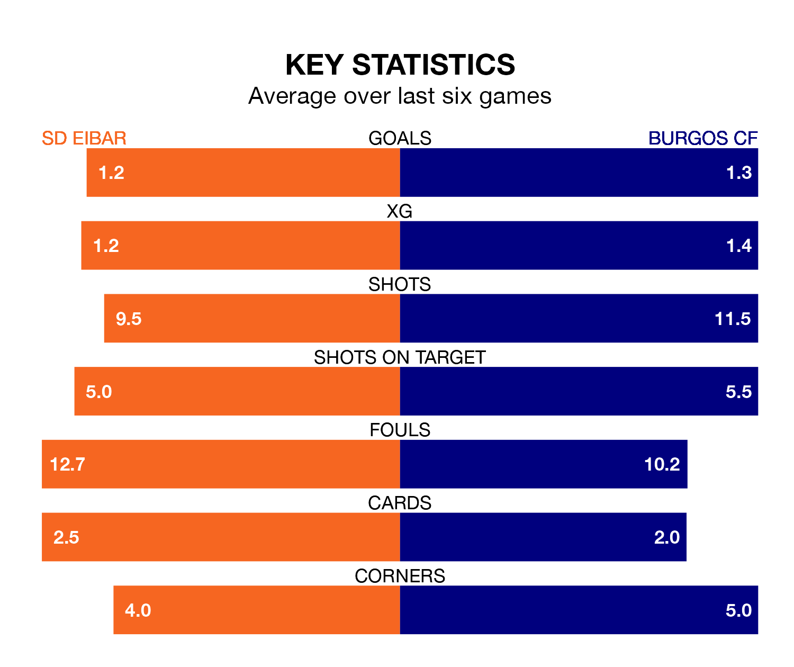

Burgos CF travel to SD Eibar on late Sunday in the Segunda División.
The visitors come into the game on the back of a win in their last match, having beaten FC Cartagena 3-0 at home, with two goals from Curro Sánchez and one from Álex Bermejo Escribano.
Eibar also won their last match, 2-0 against Leganés, with their goals scored by Jon Bautista Orgilles and Peru Nolaskoain.
With 46 goals in 29 games so far this season, Eibar are the league's joint-highest scorers with 1.6 goals per game. And they are conceding at an average rate, letting in 33 goals at a rate of 1.1 per game.
Burgos are also above average scorers, with 1.3 goals per game, compared to a league average of 1.1. They have also conceded 1.3 goals per game.
The home team are second in the table after 29 games, of which they have won 14 and drawn seven, earning 49 points.
The visitors are five places behind Eibar in seventh, with 13 wins and six draws putting them on 45 points.
With José Antonio Caro Díaz between the sticks, Burgos can rely on one of the league's safest pair of hands. He has kept 12 clean sheets in his 29 appearances this season, and only one other 'keeper – SD Huesca's Álvaro Fernández – has been able to prevent the opposition scoring on more occasions in the Segunda División.
In Eibar's net, Luca Zinedine Zidane has seven clean sheets in 29 games.
In the last five years, Eibar and Burgos have played each other on five occasions. Eibar won four of them and Burgos one.
On average, Eibar scored 1.2 goals and Burgos 0.4 in those matches.
Their last meeting was on September 9, when Burgos won 1-0 at home.
The hosts are in reasonable form in the Segunda División, with three wins and two draws from their last six games.
With four wins and two losses over that period, Burgos's form is slightly better – they have taken 12 points from 18, compared to Eibar's 11.
Sunday's match will be refereed by Miguel Sesma Espinosa, who has taken charge of 12 Segunda División games so far this season, issuing three red cards and booking 53 players. He has not awarded any penalties.
The last Eibar game Sesma Espinosa refereed was a 1-0 away loss to Villarreal B on December 4. His last Burgos match was their 2-1 win at home against Albacete Balompié on January 28.
Updated: 09:34 (UTC), 08/03/24